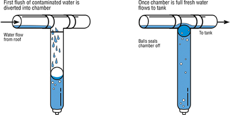

HARVESTING METHODS
Storing rainwater for direct use: Collecting rainwater for direct use is a simple process in places where rains occur throughout the year. Rainwater can be stored in tanks. However, at places where it rains for 2 to 3 months, a huge volume of storage tanks would have to be provided.
In such places, it will be more appropriate to use rainwater to recharge groundwater aquifers rather than to go for storage. If the strata are impermeable, then storing rainwater in storage tanks for direct use is a better method. Similarly, if the groundwater is saline/unfit for human consumption or the groundwater table is very deep, this method of rainwater harvesting is preferable.
Recharging groundwater aquifers from rooftop runoff: Rainwater that is collected on the rooftop of the building may be diverted by drain pipes to a filtration tank from which it flows into the recharge well. The recharge well should preferably be shallower than the water table. This method of rainwater harvesting is preferable in the areas where the rainfall occurs only for a short period in a year, and the water table is at a shallow depth.
Recharging groundwater aquifers from rooftop runoff: Rainwater that is collected on the rooftop of the building may be diverted by drain pipes to a filtration tank from which it flows into the recharge well. The recharge well should preferably be shallower than the water table. This method of rainwater harvesting is preferable in the areas where the rainfall occurs only for a short period in a year, and the water table is at a shallow depth.
SETTING UP A RAINWATER HARVESTING SYSTEM
Here are a few important factors to consider as you choose your rainwater tank and figure out your collection system design.
Location for a Rainwater Tank
Choose a location near a gutter downspout for easy filling. Yet depending on the size of your tank or layout of your property, that may not always be feasible. If needed, it’s possible to add downward sloping runs of gutter or pipes to passively transfer the rainwater from the roof area to a tank in the general vicinity. We installed section of gutter that delivers our rainwater over our chicken run and into a tank inlet about 12 feet away. Another more complex option is to pump the water from a small collection area into a larger tank.
It also ideal to locate the tank somewhere convenient to access and use the rainwater, such as to fill up a watering can. That is, unless you intend to pump it to the point-of-use. The tank should be located on a sturdy and level foundation or base. Thankfully, most water tanks are so heavy once they are full that it would be very difficult for them to topple over. Support straps are recommended for those elevated on platforms.
Take Advantage of Gravity: Head Pressure
If you look through images of rainwater collection systems, you may notice many smaller tanks are elevated on a sturdy, level platform. This serves two purposes:
One, most tanks have a tap or spigot at the bottom. In order to fill a watering can or bucket, you need some space below that tap to fit the container. Plan to elevate your tank at least slightly if you don’t intend to use a pump and have a fairly small tank.
Two, elevating a tank takes advantage of gravity. Water is heavy and exerts weight, pressing down on itself. This is referred to as “head pressure”. The larger the volume of water and the taller or higher the tank, the more head pressure it exerts. This means that a very large, tall tank will create enough head pressure to potentially connect a hose to – and have the water run through it at a decent rate. However, do not expect to connect a full-blown irrigation system to a rainwater tank without the assistance of a booster pump, unless perhaps it all runs downhill from the tank.
On the other hand, smaller and shorter tanks exude less head pressure. Thus, if a small rainwater tank sits directly on the ground, you likely would not be able to connect a hose to a tap at the bottom and get enough pressure to fill containers (let alone water with a hose directly from the tank) – as the hose would have to go upwards to get into a container. The weak water pressure will not be able to overcome the force of gravity, or will trickle very slowly.
Keeping Your Rainwater Tank Clean with Screens
The best way to keep your rainwater tanks clean is to prevent the entry of debris in the first place! To prevent junk from getting in your rain tanks, it is important they have fine-mesh screens at the inlet. The screens should be fine enough to keep out leaves, sloughing from asphalt roof shingles, insects, or other small critters. One of the perks of using a tank designed especially for rainwater harvesting is that they typically come equipped with screens. See the photo of our rain tank screens below. In addition to screens on the tank itself, you likely also want to add initial screens to the gutters or downspout to catch leaves, twigs, or other larger material before reaching the tank screen – which also helps keep that area more clean.
First Flush Diverters
A step beyond screens is to add a “first flush diverter” (aka roof washer) to your rainwater collection system. A first flush diverter is a contraption that redirects the first purge of water coming from the roof during a storm away from the rainwater tank. This essentially washes away and prevents capturing the sediment, dirt, and debris that has accumulated on the roof since the last rain.
We do not have first flush diverters. However, they’re highly recommend for folks who receive excessive roof debris, or anyone interested in potentially drinking their rainwater. We’ll talk about drinking rainwater in a moment, along with routine tank maintenance and cleaning.
How to Prevent Algae in Your Rainwater Tank
Algae is a common concern in any water storage tank. As we already briefly discussed, the best way to prevent algal growth in your rainwater tank is to always use an opaque tank that does not allow sunlight in. Even then, a small amount of algae may be introduced from roof runoff, but will not be able to flourish inside. Other ways to combat algae include treating the water with chlorine or other algaecide additives. In my opinion, that sort of defeats the purpose of collecting pure water. Even after sitting in our tanks for nearly 9 months, our rainwater has only a very slight green tinge to it!
Can I Capture Rainwater If I Don’t Have Gutters
Yes! You can totally set up a rainwater harvesting system even if you don’t have gutters. Our house doesn’t. All you need to do is find a location along your roof line (assuming it is sloped) where rainwater naturally collects and streams down most heavily. This will commonly be in a corner, or at the low point of a valley in the roof. Then, create your own little gutter or downspout!
In our front yard, we fashioned up an old copper funnel attached to the eaves. To that, we attached tubing that fit snugly over the funnel’s bottom hole and ran it to the top of our 140-gallon rainwater tank. On our side yard, we installed a small section of gutter below a valley with heavy runoff, including a section of downspout. We “glued” end cap pieces on each open end of the short 3-foot section of gutter with waterproof silicone. That way, all the water caught in the gutter is directed down the spout to our two 530-gallon rain tanks nearby.
Use Water Efficiently
Here are some ideas for specific uses of rainwater:
- Hand water your lawn and garden
- Connect rainwater collection system to irrigation/sprinkler system
- Wash your vehicles
- Wash your pets
- Refill your fountains and fish ponds
- Refill your swimming pool
- Replace the use of tap water with rainwater to wash your driveways and sidewalks (if you don't use a broom)
- For all indoor non-potable fixtures (toilets and clothes washer)
- For all potable needs when properly filtered and disinfected
- For industrial processes instead of municipally treated water